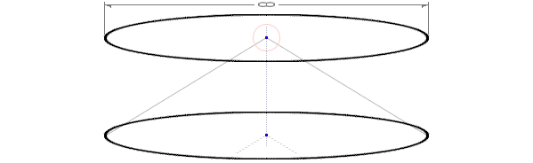
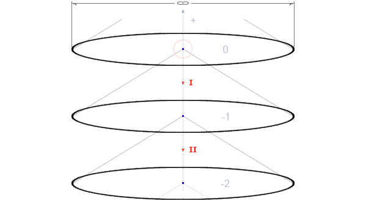

full contents of the book:
Nothing & Dot (Prolog)
Purpose
Contemplated
Entity
Consciousness
Two-Aspect (dualistic) Entity
Fourth dimension and ...
Society and Humanity
Fifth dimension and ...
Firstoccurence
Act of the “I”
The Proc.of study.the Act of "I"
The Meaning of Being
Development of Entity
The Collective Reality
the Entity Development System
Echo (Reflection)
Real Aspect of the Global I
About Worldview
Space-Time
Attitude toward Yourself
Attitude toward your body
Laziness
Fear
Hope (...for Miracle)
Adaptation
Identity of Personality
Relation [ Reason | Body ]
Free Will
Hard problem of Consciousness
Indistinguish and Identity
Matter
Gnoseology
Epistemology
Separation
to the home page
— Chapter Six —
————————————————————————————
————————————————————————————
TWO-ASPECT (DUALISTIC) ENTITY
It is absolutely clear and obvious to us how the scheme of the contemplation mechanism leads to complete isolation and blocks the ‘Idea of the external reality of objects independent of “Consciousness”. At the same time, we also understand that we are talking about the impossibility of the existence of the physical World – such as we imagined it before, but otherwise nothing changes, except for the extremely important (!) emotional psichic relations. The contemplated remains the same. In itself, the Knowledge of the Structure of the World cannot manifest activity by its own Will, and magically influence the boiling of water in a kettle, will not melt ice, will not make the faded beautiful, etc. - this is not a spell. We are, however, sure that this knowledge can be used, but only at will and thanks to certain practices, which are not discussed here, because This is the practice itself, all the rest are, for the most part, secondary. The one who will be able to realize This essence will forever change the attitude towards Himself, that is, it is implied by an equal attitude towards the World as a whole, towards Humanity, Society, and towards everything living and nonliving, including all situations. This unusual Knowledge will help to realize Happiness, to love Himself, the World, God, and Everything Absolutely – without any limitations and exceptions;
* * *
Photons act on the eye cell -> The cell initiates signals that go to the brain -> The signals are processed, and then -> "I" see what seems external to me. "I" understand that this phenomenon is provided by systemic features, and is only a sensory representation of the results of signal processing - that is, waves originating from the "Sources of My own history, and modified by experience to My appearance." We already knew that according to our physics, some of the signals are electrical, we agreed to call them that, but what are they really? - we do not know;
So, in the process of this research we conclude that we are, and were, in an ‘isolated bubble of closed space’, which seems common to us, but upon comprehension turns out to be individual;
Let us remember that we began to reason with the aim of studying the mechanism by which we ‘see right now’;
Let's draw an analogy of the result, that is, we are in a separate room (as if already inside ‘Consciousness’, it is similar), and, in these conditions, we say that we are in isolation, and, pointing the index finger towards the eyes, we say that we see everything that is happening in this room, but precisely inside 'Consciousness', thereby, as if once again, again, we dive inside Ourselves. Before, we have already gone through this practice and understand that not everyone will be able to imagine it, but many already know that after understanding, it will turn out to be too simple. We hope you will master it;
Constructing reality, we dive inside the "I" -> dynamically forming our "perspective future", taking into account the fading past, as if this remaining outside of us. In this process, it seems to us that we are contemplating the external
Thus, it can be stated that any experience is used as part of the data, as a basis for extracting new experience. Another important part of the data are:
a). Ideas of "things" in their ideal form; and
b). Conditions that influence both the dynamics and change of all objects in the content of a specific current situation, and can also influence the semantic change of the situation itself;
The potential of a situation is its attractiveness, which in turn reflects the degree of saturation with experience and the interest of the “I” (Need of the Essence) in participation, and the intention to be active in the desire to extract new experience, until completely exhausted. But, the complete extraction of experience from the situation is absolutely impossible (it is also, in principle, infinite, in terms of information), however, the “Essence” strives for development, absorbing the maximum experience from what is available, but - a lot depends on the ability to effectively extract experience. It is quite possible that a situation is filled with events from which it is not possible to extract any effective and rational experience, except for visual, although for a writer or artist it may be invaluable - this means that the “Entity” needs it;
Interest is of Great Importance, that is, the information that interests the "Entity", as content contained in the data flow - is a catalyst and energy for the manifestation of intention, the realization of reality and the formation of future events. This is incredibly important for those who are learning to manage reality (... there are many practices);
It is necessary to draw your special attention to the fact that changes in static data on the Global level, preserved as consequences of the activity of the “Real aspect of the Self” (if someone moved a stone, then it will remain moved), are not yet reliable evidence of the “Collective Synchronic Realization” of reality, but so far we have not discovered any expressed prerequisites explaining any principles by which this would be possible, therefore, until now, we are investigating the ‘Nature’ of only one (from the position of each) “Real aspect of the I”;
"Man is a social being". We assume that people are not phantoms, and for this reason we have a great interest and a natural need to discover and study the mechanism of Joint Realization of Collective Reality. In addition, we want to find out (even theoretically) whether other civilizations and Global factors exist? Can they be dangerous?, or are they dependent on the intention, as well as the activity of other "Real aspects of the I";
shaped sphere - diameter equal to infinity
(representation as a section of the current space along the equator)
Let us imagine and consider this as a diagram on a two-dimensional plane of paper. In figure 2, we practiced cutting an infinite three-dimensional space along the equator - this is a flat circle, the thickness of one conventional point (fig. 5). Let us assume our current space, in the center of which we are now located and discussing the structure of the World (through knowledge of the mechanism of contemplation), pointing to the transition inside the Self, where the "I in the body" participates in the situation, extracting this experience in the contemplated frame ("I" see);
through the center –> into inside

fig. 6
(immersion within oneself one level inside)
After immersion within Ourselves, we are again in the same conditions, we point to the inner “I” and to Its inner contemplation. This immerses us to another – the next level within Ourselves (see fig. 6). We have depicted this diagram on a plane, but by concentrating we understand that this is a sphere with a central point in the center, and this point goes inside Itself, that is, each of us, and turns out to be another space with a central point inside (or compare with the “point of infinity”);
Think about this amazing phenomenon – this point (“I”) is infinite inside Itself – that is, ‘Mine? I’ strangely slips away when trying to touch (It). Each space, at the same time, seems to inherit the Center (“I” seems bottomless, that is, the Abyss – in some, but, certain sense). We are able to do this procedure as many times as we want. The result will be the same. It should be noted – the data uses a stream of photons as transport -> flying inside the “I”, however, the contemplated ‘fills’ the realized space precisely from the outside, from the past. The future is formed from the past (!).
This means that data enters memory through a certain “I Axis”, through Consciousness and Reason (we called it the signal processing process), is interpreted and qualified, transformed into sensory images, and –> fills the space … from beyond the invisible edge of its limits. All this literally arises, appearing as something contemplated, as if in a giant, magical 3D theater:
∞… through the center –> inside –> through the center –> inside …-∞

fig. 7
(immersion within oneself two levels into inside)
Considering that "Consciousness" is out-of-limits and realizes any spaces, it should be explained that multidimensionality cannot be a structural or programmatic problem, since the increase in dimensionality has even a very banal regularity. Another thing is that we will encounter the problem of representation, and without visualization we will not be able to fully explore (the next higher) higher dimensions;
And yet, we will be able to do something. Then our eyes will truly open and it will happen soon, or very soon, but within the framework of this study;
We suggest recalling, or paying attention to, this widely known feature (fundamental pattern):
The mother spaces contain an infinite number of subordinate spaces, each of which is 1 less in dimension.
Zero-dimensionality – Abstract Dot;
One-dimensionality - A straight line connected in one direction from an infinite number of zero-dimensional dots;
Two-dimensionality – a plane, composed of an infinite number of parallel lines;
Three-dimensionality (Volume) – consists of an infinite number of superimposed
Four-dimensionality* (Unicus) – is composed of an infinite number of nested, successively inheriting the central point (outside –> inside) three-dimensional spaces. Unicus [lat] – personal, unique;
*Four-dimensionality is the main fundamental property of the four-dimensional construction of space;
Five-dimensionality (Generalis) – is composed of an infinite number of four-dimensionalities, with axes directed inwards. Generalis [lat] – general. To understand five-dimensionality, it is necessary to understand four-dimensionality;
According to this method, we can easily assume any dimension, in theory it will be correct, but we cannot present a method and practical geometry, because for this knowledge a logical basis is necessary, that is, a reason leading to understanding is needed. The fifth dimension (and five-dimensionality) is not easy to imagine, we will try to explain it first, and then we will try to depict it on a two-dimensional plane, but first let's look at Unicus. From the examples that we have discussed above and thanks to the presentation, we understand that the axis of the fourth dimension is infinite and directed inward and outward. In addition, it is necessary to understand that "Consciousness" has no limitations in terms of realization of any dimensions. Both "Consciousness" and the "Global aspect of the Entity", as "Causes" are 'out-of-limits', and are expressed in this way:
∞+1 and –∞–1
Where ∞+1 is the out-of-limits outside and is 'Consciousness', and -∞-1 is the out-of-limits inside, that is, the “Global aspect of the 'I'”, realized with fundamental relativity to
Are you wondering, What is the difference between the “Global aspect of the Entity” (that is, the “Global aspect of the 'I' ”, which is the same thing) and the “Real aspect of the Global 'I'”? It is not the time to talk about this yet, but for clarification it should be said that: “The Global aspect of the Entity” is the “One Great 'I'”, that is, All “Selves” – of each being in their infinite number, which are defined in this relation as “Not I”, in relation to That which Is in reality and participates in situations as the ‘Real aspect of the Global 'I'’ – as a necessary Balance of opposites (we understand relativity as equal). This relativity is fundamental, equivalent, interdependent, and is ensured by the fact of “Systemic necessity”;
read next chapter >> << back